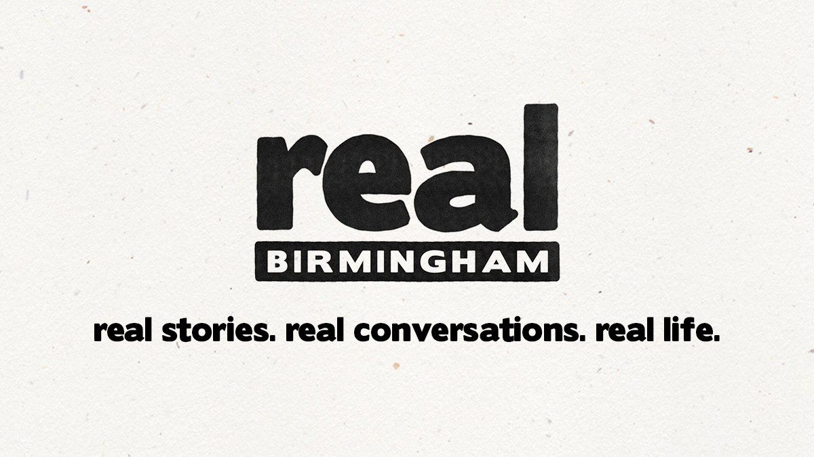
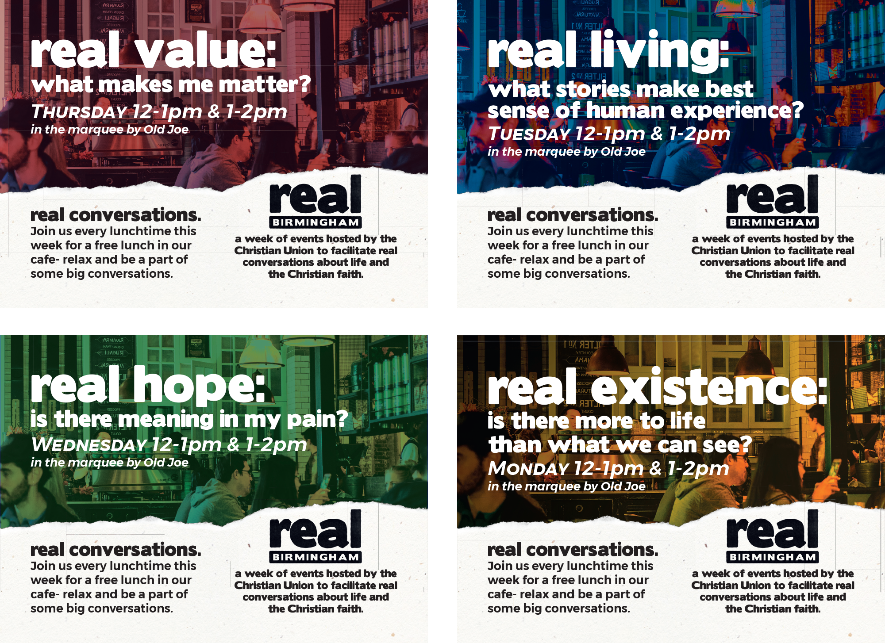
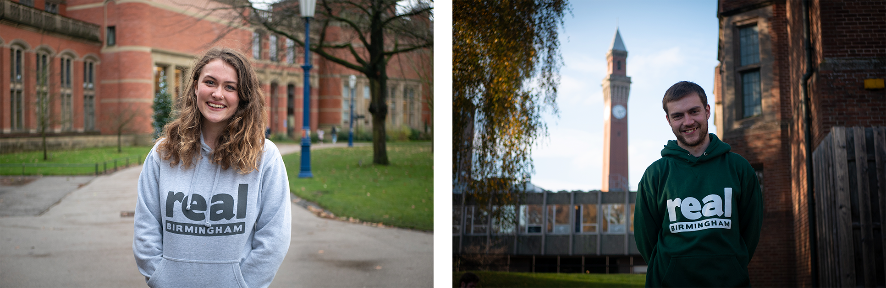
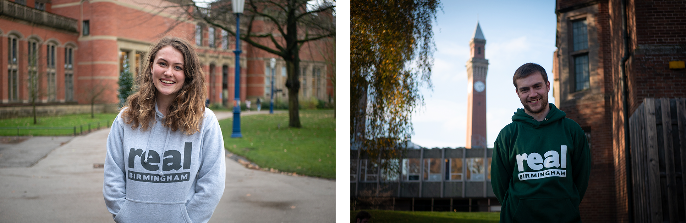
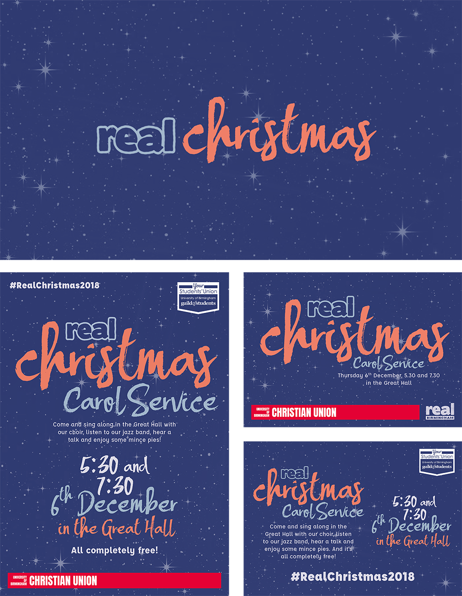
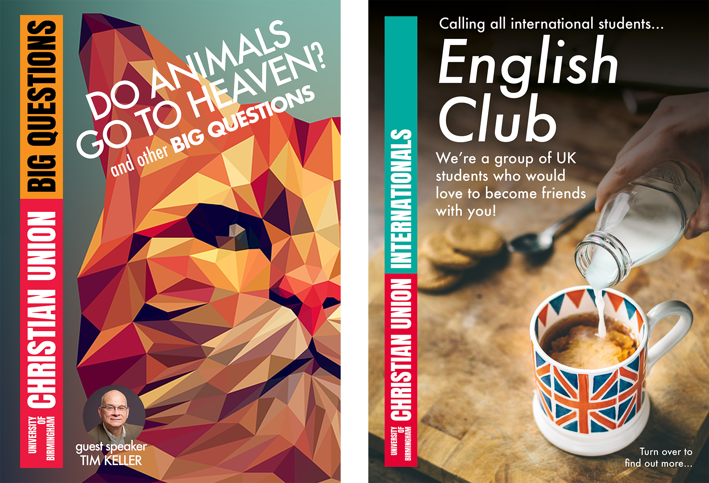
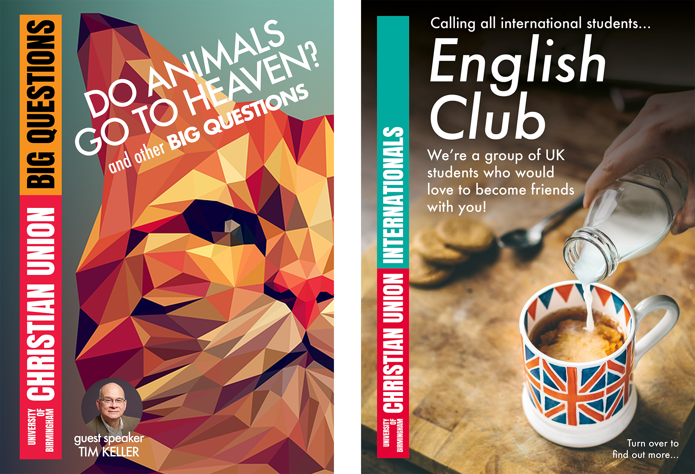
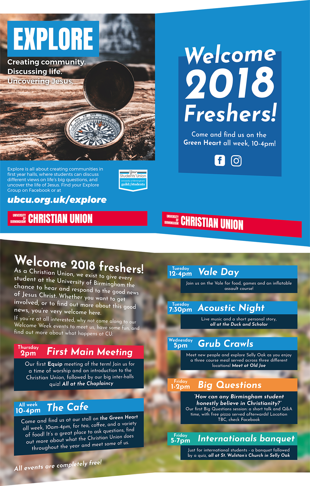

arrow_back_ios
Design work
brightness_4'Real Birmingham'
Publicity for a week of events run by the Christian. A strong visual brand was developed upon which all publicity was based. Themes for the week were real, authentic, natural, and sustainable, so an earthy, papery theme was chosen. Flyers were printed on recycled matte paper to stand out from the cheap glossy feel of most flyers handed out on campus.
Main logo

A3 poster, A5 flyers
Daily events flyers
 

Branding in context. Photography by me
'Real Christmas' Carol Service
Publicity for a Carol Service run by the Christian Union. Took cues from the 'Real Birmingham' publicity while remaining a distinct visual brand in itself.
Andrew Peterson concert poster
Poster and flyer design.

Background image provided by Andrew Peterson management.
Other Christian Union events
As publicity secretary, I was responsible for creating the publicity for nearly all CU events.
 

Flyer background images all taken from external sources.
Fold out flyer: outside and inside

Alternate design